Gallery
Front-end studies. Every texture is generated in the browser. Plates marked with parameters can be edited on their own page.
Editable studies36
Newest first. Each opens its plate, where every parameter, ink and motion setting can be changed.
 ST-30Thermal field23 parameters
ST-30Thermal field23 parameters ST-29Grain pill23 parameters
ST-29Grain pill23 parameters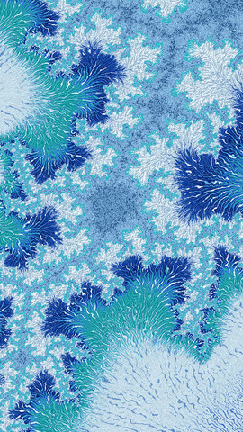
ST-26Fractal frost24 parameters ST-19Fold glow23 parameters
ST-19Fold glow23 parameters ST-18Gradient orbs24 parameters
ST-18Gradient orbs24 parameters TS-22Capsule system45 parameters·motion·pointer
TS-22Capsule system45 parameters·motion·pointer TS-19Arc bundles on a dashed globe23 parameters·motion·pointer
TS-19Arc bundles on a dashed globe23 parameters·motion·pointer TS-17Warped ring cells26 parameters·motion·pointer
TS-17Warped ring cells26 parameters·motion·pointer TS-16Stipple bank and dot burst40 parameters·motion·pointer
TS-16Stipple bank and dot burst40 parameters·motion·pointer ST-39Ripple field24 parameters
ST-39Ripple field24 parameters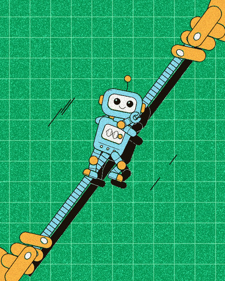
ST-38Robot on the line16 parameters ST-37Arc ledger24 parameters
ST-37Arc ledger24 parameters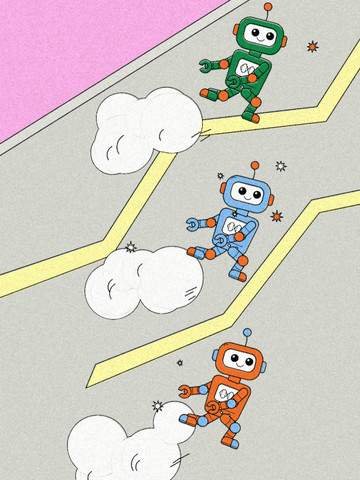
ST-36Riso road15 parameters ST-35Dotted flow32 parameters
ST-35Dotted flow32 parameters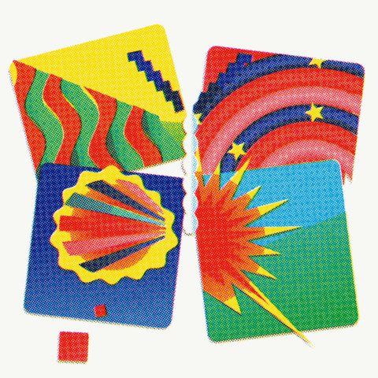
ST-34Screened pop31 parameters ST-33Spray seascape24 parameters
ST-33Spray seascape24 parameters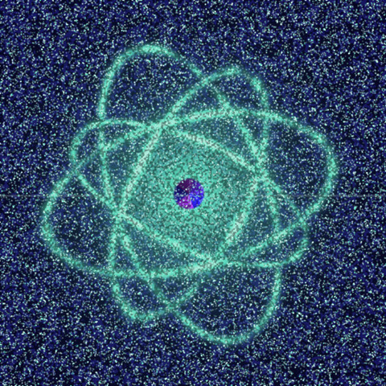
ST-32Noise atom24 parameters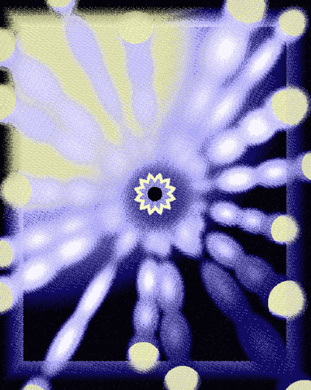
ST-31Radial dither bloom28 parameters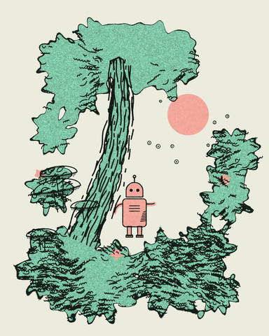
ST-28Two-ink woods16 parameters ST-27Dithered candle35 parameters
ST-27Dithered candle35 parameters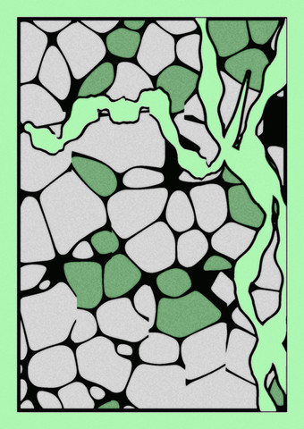
ST-25Membrane20 parameters ST-24Stipple wave20 parameters
ST-24Stipple wave20 parameters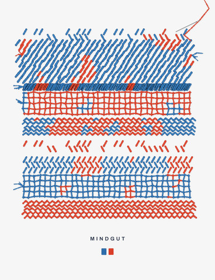
ST-23Stitch sampler11 parameters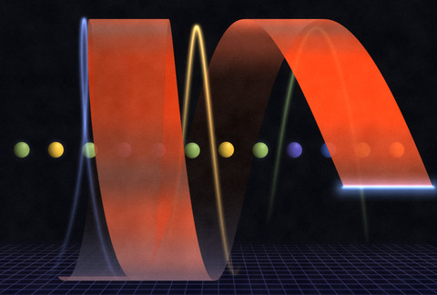
ST-22Airbrush ribbon30 parameters ST-21Disc stack45 parameters
ST-21Disc stack45 parameters ST-20Interference32 parameters
ST-20Interference32 parameters ST-15Phosphor cell23 parameters
ST-15Phosphor cell23 parameters ST-14Stipple gouache14 parameters
ST-14Stipple gouache14 parameters ST-13Grain nocturne21 parameters
ST-13Grain nocturne21 parameters TS-15Banknote engraving49 parameters·pointer
TS-15Banknote engraving49 parameters·pointer ST-11Gradient by number5 parameters
ST-11Gradient by number5 parameters ST-10Stirred mesh gradient1 parameter
ST-10Stirred mesh gradient1 parameter ST-09Glow nine4 parameters
ST-09Glow nine4 parameters TS-10Thermal blob field15 parameters·motion
TS-10Thermal blob field15 parameters·motion TS-06Riso three-plate separation31 parameters·motion
TS-06Riso three-plate separation31 parameters·motion TS-01Moiré from two ring screens13 parameters
TS-01Moiré from two ring screens13 parametersFigure plates158
Single figures lifted from pages across the work and rebuilt as plates, each with its own parameters.
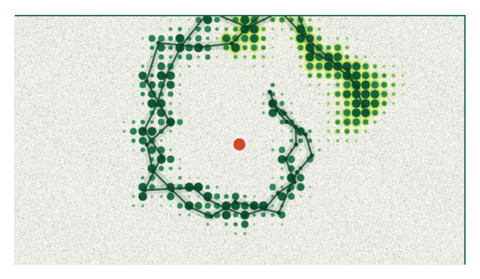
PL-01Pixel ring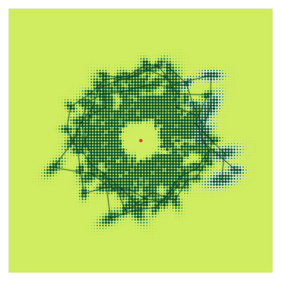
PL-02Ring on lime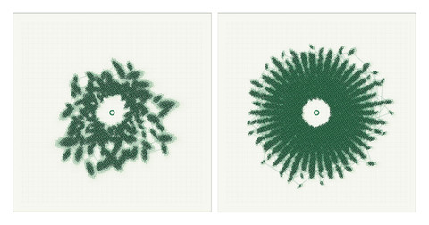
PL-03Bloom, early and full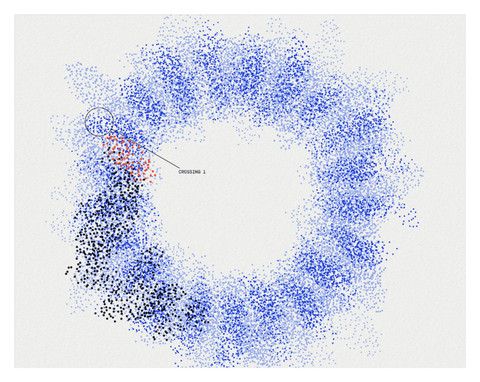
PL-04Ring of scattered dots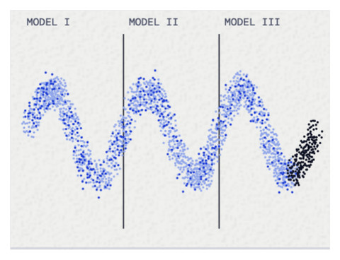
PL-05Three models as one wave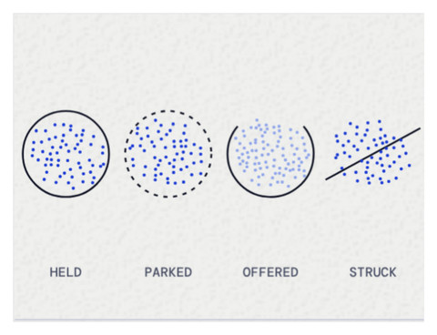
PL-06Four states in dots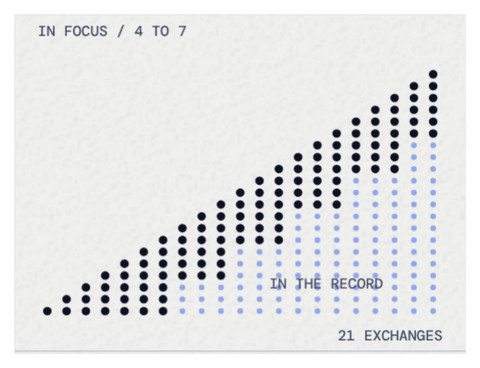
PL-07Dot ramp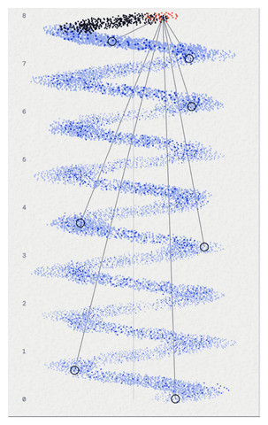
PL-08Helix as a zigzag of dots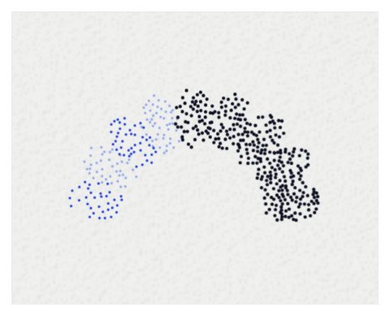
PL-09Wave with a kept span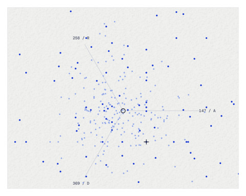
PL-10Scatter field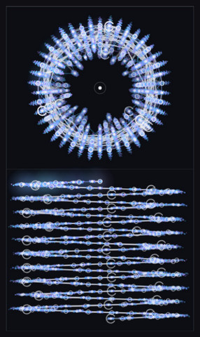
PL-11Ring over standing waves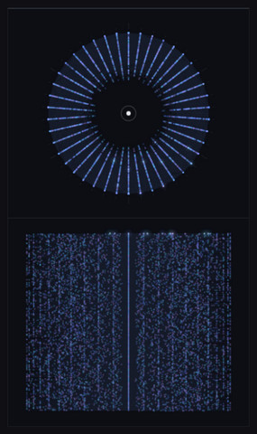
PL-12Ring over a field of lines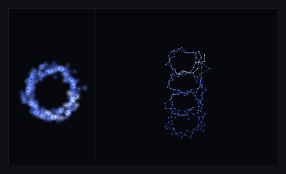
PL-13Two rings on black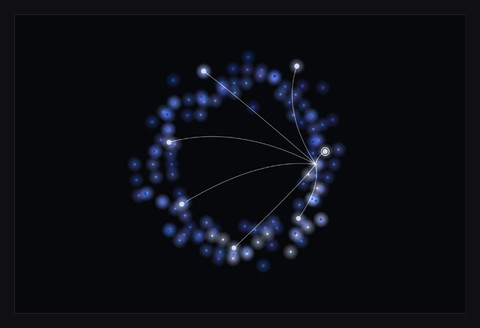
PL-14Dotted ring with chords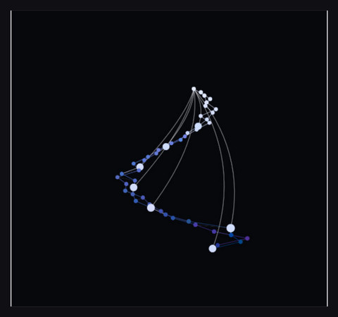
PL-15Standing wave at 90°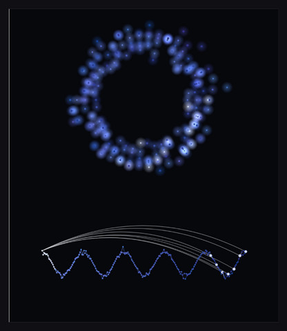
PL-16Seen from above, seen from the side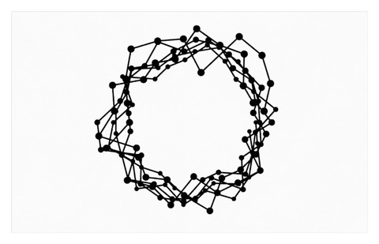
PL-17Node ring, black on white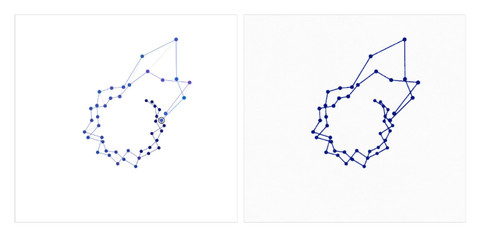
PL-18One object, two views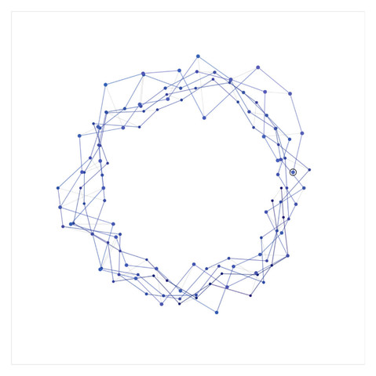
PL-19Ring network on white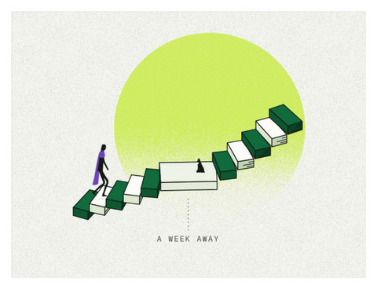
PL-20The helix step · walker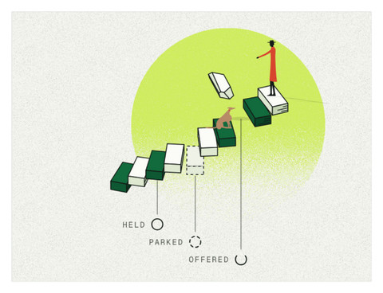
PL-21The helix step · three states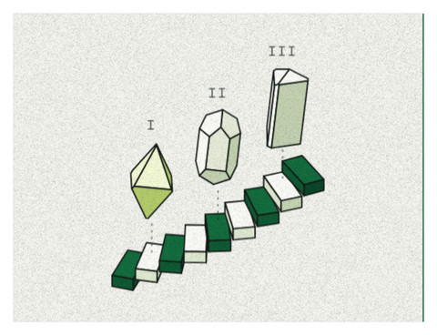
PL-22Three crystals on the steps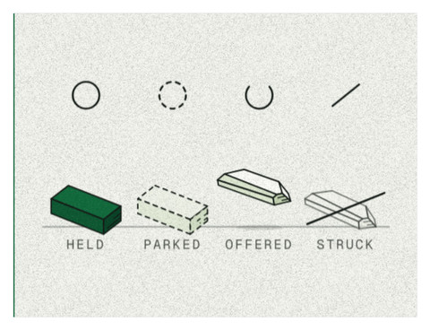
PL-23Four states in blocks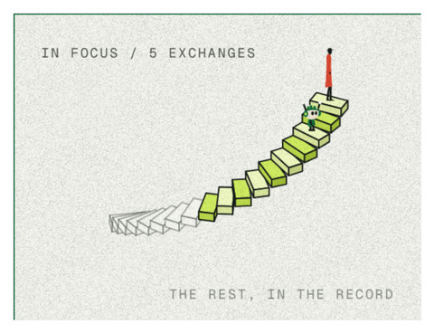
PL-24The steps as a recordPL-25The climb · people and the robot on the helix steps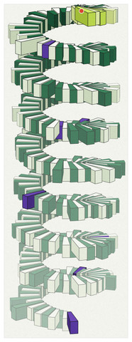
PL-26Helix of steps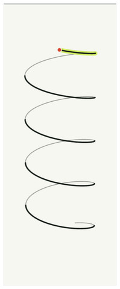
PL-27Helix as a single line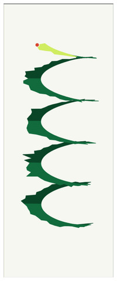
PL-28Helix as cut ribbon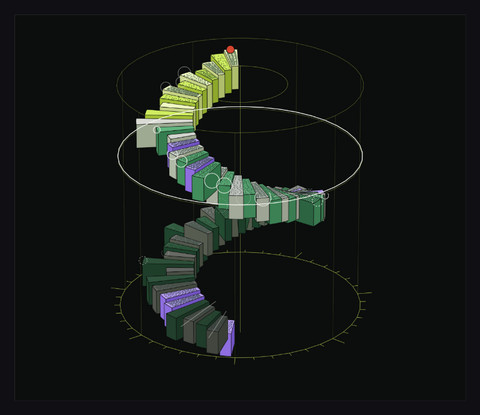
PL-29Helix on black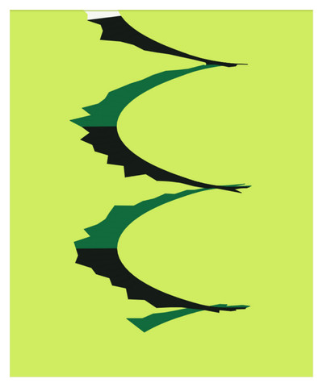
PL-30Ribbon on lime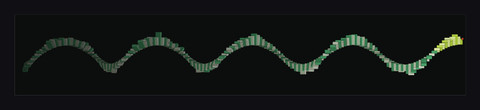
PL-31Wave strip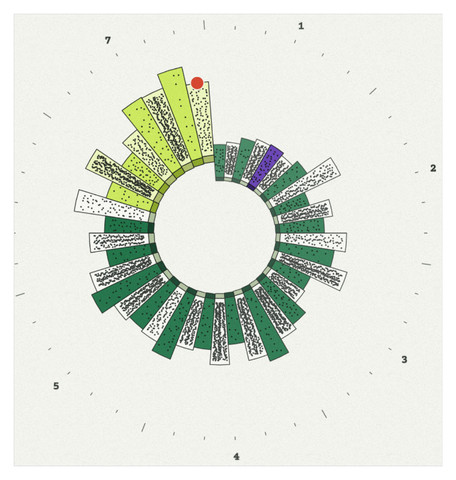
PL-32Ring of steps, seen down the axis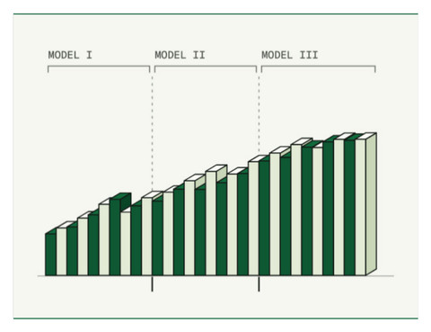
PL-33Bar ramp, three models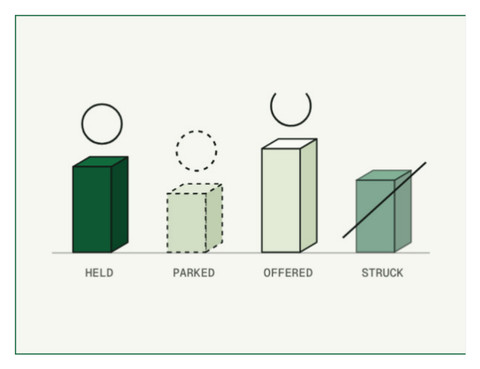
PL-34Four states in bars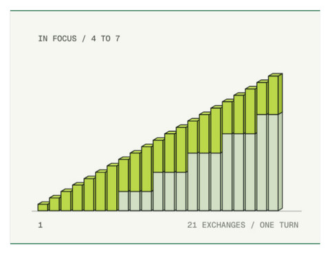
PL-35Stepped area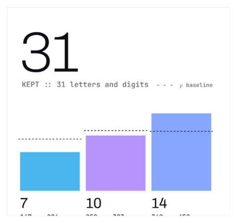
PL-36Three counts as bars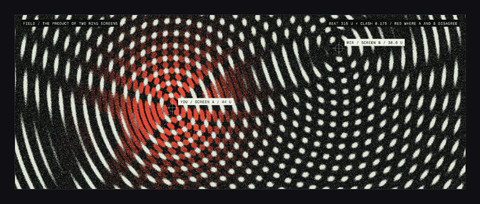
PL-37Resonance · ring moiré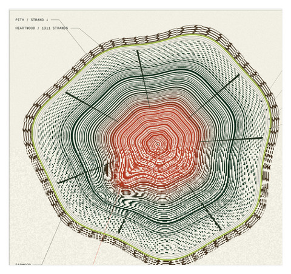
PL-38Resonance · contour island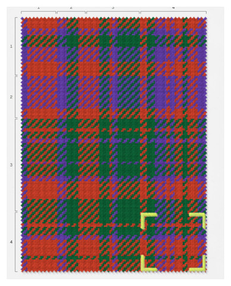
PL-39Resonance · tartan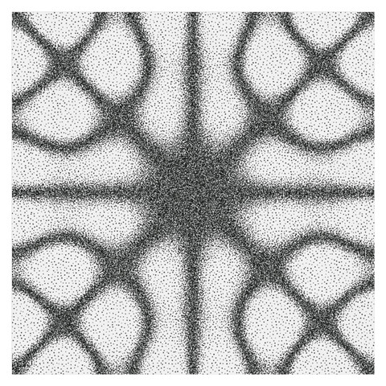
PL-40Resonance · plate figures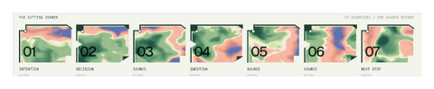
PL-41Cutting drawer, seven contour cardsPL-42Seven die-cut gradient cardsPL-43Scattered gradient cardsPL-44Spiked address ringPL-45Garden plot, seven plantsPL-46Atlas of the eveningPL-47Agenda as gradient columnsPL-48Sphere with seven addressesPL-49Particle wavePL-50Frequency cardPL-51Afterimage cardPL-52Redline cardPL-53Channel balance as wavesPL-54Text spiralPL-55Listening fieldPL-56One-point illusionPL-57Layer stack, isometricPL-58River and riverbed, wide14 parametersPL-59The Silicon · 4PL-60Firmware loop dialPL-61Power domain schematicPL-62Exploded technical drawing of the Arcade I/O Pico CarrierPL-63MicrocontrollerPL-64Digital inputsPL-65The frame is a contractPL-66Anchor, bend, tagPL-67Asignifying rupturePL-68The three passive synthesesPL-69One egg, three regimesPL-70The double articulationPL-71The three strataPL-72The tetravalent assemblagePL-73The four regimes of signsPL-74The abstract machine of facialityPL-75The three lines of a lifePL-76Microfascism resonates upwardPL-77State and war machinePL-78Code → overcodePL-79The two limitsPL-80The two poles of libidinal investmentPL-81States in six groups around the idle hubPL-82Bo at 2×, and the same frame with every ball center ringedPL-83The backyardPL-84The staged contact sheetPL-85MASSIVE · field modelPL-86Starts per dayPL-87MASSIVE · lattice bent by two wellsPL-89The park · gardenPL-90Building B-01 · sprite sheetPL-91Building B-03 · roof offPL-92Cathode-ray receivers · 1PL-93Cathode-ray receivers · 3PL-94Cathode-ray receivers · 5PL-95Cathode-ray receivers · 6PL-96Cathode-ray receivers · 9PL-97Four inks overprintedPL-98Halftone wedges and a lily padPL-99Lotus on xuan, gold sealPL-100Riso, screen-print and gold swatchesPL-101Condensed stroke alphabetPL-102Justified column, gold on greenPL-103Gold seal characters on grid paperPL-104Slab banner on bluePL-105The same flower in three framesPL-106URIP IKU URUP: screen-print bannerPL-107花開富貴: gold-keyline moth and peony on xuanPL-108STILLNESS: riso lotus poster with heronPL-109Subject B, orthographicPL-110Sources, Subject BPL-111Purchase intent in five barsPL-112Barriers to switching, rankedPL-113plum blossom: meticulous re-drawingPL-114Flat plum blossomPL-115Aura rings, neon blossomsPL-116Fog with a spectrumPL-117Frosted applePL-118Blurred bloom with vertical typePL-119Sparkle on greenPL-120六月 · 荷花: lotus, white gallery posterPL-121NOCTURNE: night garden, neon aura fieldPL-122Blood Orange Spritz: frosted product pagePL-123Staghorn fern, watercolor ovalPL-124Apricot stickers, dot-screen halftonePL-125Two views of one markerPL-126Plate 01: the anchor, livePL-127scene mode · a drawn bed · 1PL-128The Encyclopedia Garden, drawn as a garden planPL-129Drawing the garden · 1PL-130the garden, read as a sheetPL-131The Cave RigPL-132Wall, turntable and projector · planPL-133Actias luna · the parts a moth runs onPL-134Larva, pupa, imago · one genome, two animalsPL-135Hawkmoth read as temperature · shiver, hover, dumpPL-136The resonant box and the leading-edge vortexPL-137Surge and cast · a male follows the scentPL-138Three answers that need no earsPL-139Two compound eyes in sectionPL-140The dorsal light response · orbit, stall, flipPL-141Io at rest · the flash of two eyesPL-142Io · egg to cocoon against a millimeter rulePL-143Io · one day on a clockPL-144Four boxes, one wire, and a noise sourcePL-145Information is surprise, and the unit is the bitPL-146Noise sets a limit, and the limit can be reachedPL-147Bandwidth times the log of signal over noise PL-148Weighed from the concept end · a new drawing in the measured grammar
PL-148Weighed from the concept end · a new drawing in the measured grammar PL-149Counted fields18 parametersPL-150A strand in stipple, two inksPL-151The strand in coarse dotsPL-152A ring of strokesPL-153Arcs over a baselinePL-154Counts printed as dotsPL-155Change models halfway · the handoff on the stepsPL-156Every exchange crystallizes · said, counted, crystallized, addedPL-157The parade · robots and animals on the linePL-158A noctuid's ear · fly the batPL-159Io caterpillars queuing · seen from above
PL-149Counted fields18 parametersPL-150A strand in stipple, two inksPL-151The strand in coarse dotsPL-152A ring of strokesPL-153Arcs over a baselinePL-154Counts printed as dotsPL-155Change models halfway · the handoff on the stepsPL-156Every exchange crystallizes · said, counted, crystallized, addedPL-157The parade · robots and animals on the linePL-158A noctuid's ear · fly the batPL-159Io caterpillars queuing · seen from aboveRead plates14
Measured rebuilds with a spec and no controls yet.
 ST-01Pencil keyline botanical
ST-01Pencil keyline botanical ST-02Stipple-ray bloom
ST-02Stipple-ray bloom ST-03Thermal die-cut chips
ST-03Thermal die-cut chips ST-04Chromolitho calendar plate
ST-04Chromolitho calendar plate ST-05Dimetric stipple loggia
ST-05Dimetric stipple loggia ST-06MASSIVE · source instrument
ST-06MASSIVE · source instrument ST-07MASSIVE · drawn geometry
ST-07MASSIVE · drawn geometry TS-02Four-ink spot illustration
TS-02Four-ink spot illustration TS-03Iridescent chrome on blackTS-09Grain gradient layers
TS-03Iridescent chrome on blackTS-09Grain gradient layers TS-11Worn black box
TS-11Worn black box TS-12Perforated stamp
TS-12Perforated stamp TS-13ASCII glyph-field animationsmotion·pointer
TS-13ASCII glyph-field animationsmotion·pointer TS-14Deep Space Chroma · birefringencemotion·pointer
TS-14Deep Space Chroma · birefringencemotion·pointerPrinted matter15
Paper-and-ink studies on one page; each card opens its study on that page.